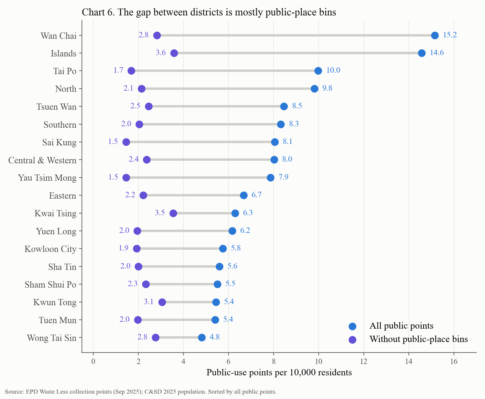
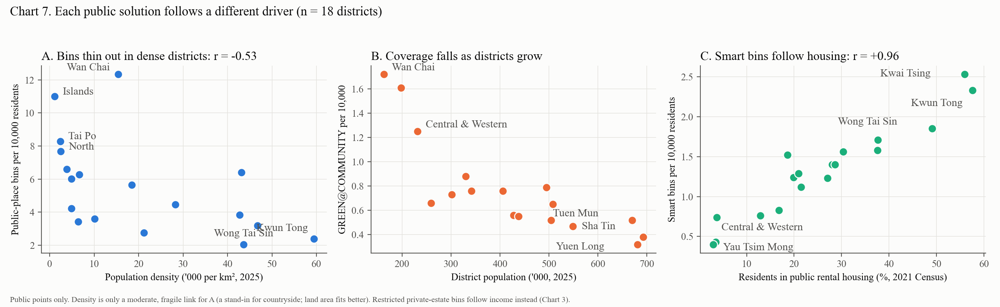
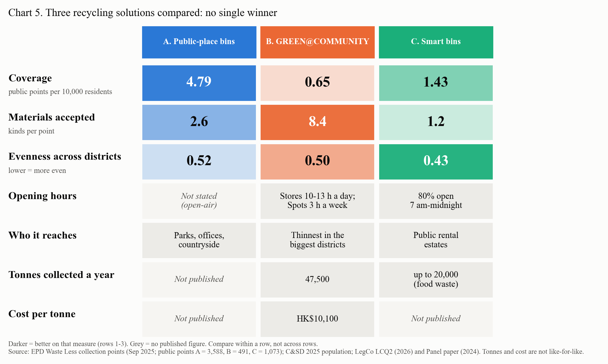

22%of household waste recycled; target ≈55% by 2035
3.2×gap between districts, mostly from park and office bins
0 / 3solutions win on every measure
3 of 20correlation tests hold up in every check; most income links are really size and housing
1Problem and questions
Hong Kong landfills 10,510 t of waste a day, and residents say a nearby bin is their main reason to recycle (Ma et al., 2023).
How evenly does the network reach each district, and how do the three government solutions compare?
RQ1Spread between districts?RQ2Solutions compared?RQ3Income, and why?RQ4Waste or recycling?
A public-place bins B GREEN@COMMUNITY C smart bins
C&SD 2025 population and income; 2021 Census housing; EPD waste statistics 2022–24
15 reports and papers converted to common units
Points per 10,000 residents, n = 18 districts
Correlation, "held fixed" checks, six robustness checks incl. a permutation test
Official aggregated data only; no personal data.
3What you count changes who looks well served

Wan Chai (15.2) and Islands (14.6) lead only because of bins in parks, offices and hiking roads. Without them, every district falls to 1.5–3.6.
6How far to trust it
Exploratory: only 3 of 20 correlation tests are reliable
RQ4 unanswered: EPD district waste data are "indicative only"
Counts ignore capacity and opening hours
One-day snapshot, 18 districts, no walking distance
Associations, not causes
4Each solution follows a different driver, not income

A thins out in dense districts · B falls as districts grow · C follows public rental housing (r = +0.96). The income link nearly vanishes once we hold fixed size (B: +0.49 → +0.04) or public rental share (C: −0.67 → +0.01).
5Three solutions, no single winner

7Recommendations
1
Measure access by type, not total count.
2
Scale GREEN@COMMUNITY to population (≈59 more Spots).
3
Target Stores at older private buildings with no management.
4
Publish output and cost for every solution, by district.
Hong Kong does not simply need more recycling points; it needs to know whom each one reaches.